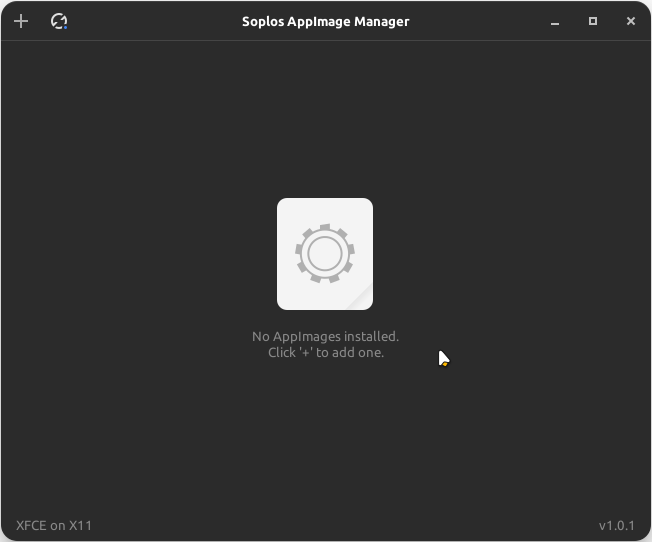
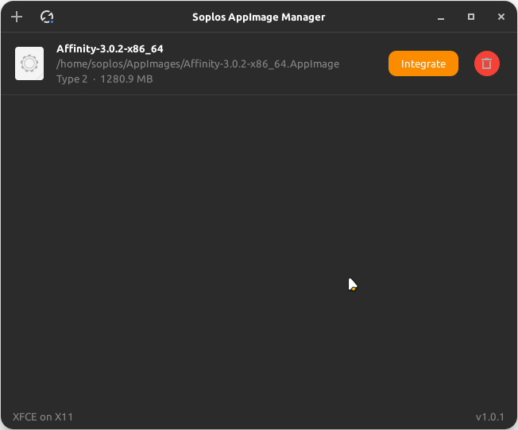
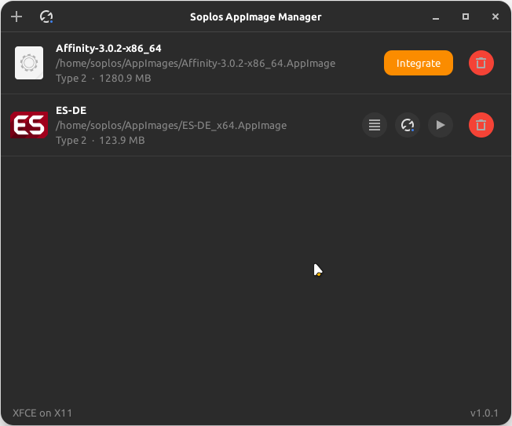
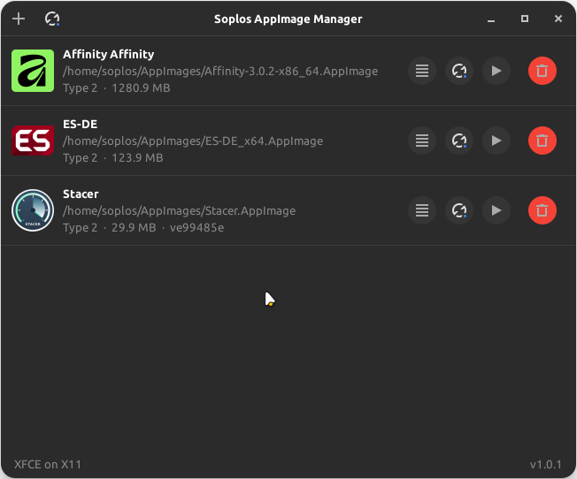
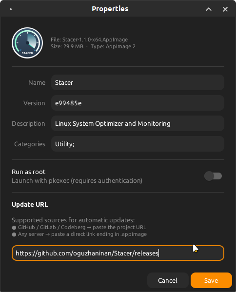
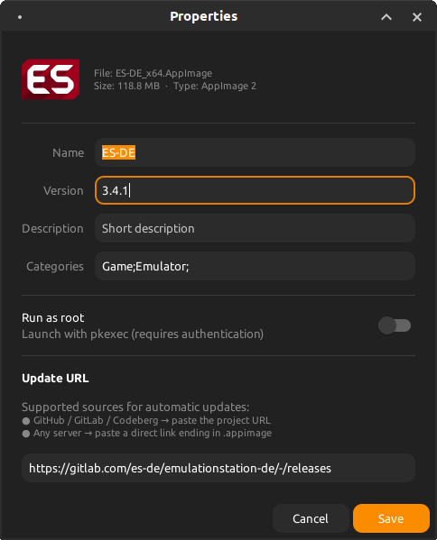
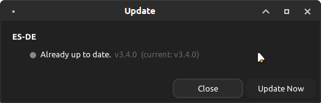
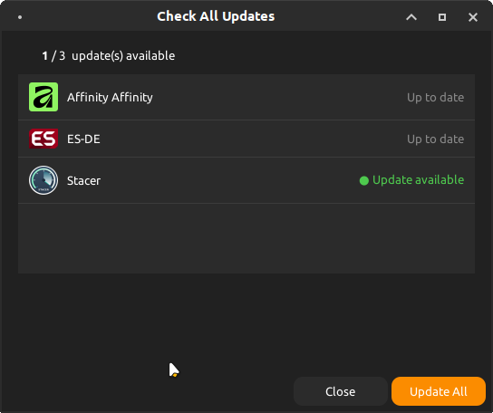

ES
ES FR
FR PT
PT DE
DE IT
IT RO
RO RU
RUOverview
Soplos AppImage Manager lets you easily integrate AppImage applications into your Soplos Linux desktop. Select any AppImage file and the manager moves it to ~/AppImages/, extracts its icon and metadata, and creates a .desktop entry so the app appears in your application menu — no manual steps needed.
The manager also detects AppImages already present in ~/AppImages/ regardless of their origin, whether installed by Soplos Welcome, placed manually, or downloaded from any source, and offers a one-click integration button for each.
Key Features
- Add AppImages: File chooser or drag & drop — the file is moved to ~/AppImages/ automatically.
- Metadata extraction: Icon, name, version and description are extracted directly from the AppImage itself.
- Desktop integration: A .desktop file is created in ~/.local/share/applications/ so the app appears in the system menu immediately.
- Universal detection: Recognises AppImages installed by any source and provides a one-click integration button for each unregistered file.
- Auto-refresh: File monitor watches ~/AppImages/ and ~/.local/share/applications/ — no manual refresh needed.
- Properties: Edit name, version, description, categories and update URL for each AppImage.
- Run as root: Mark any AppImage to launch with pkexec — a PolicyKit authentication dialog appears on launch.
- Automatic updates: Checks GitHub, GitLab and Codeberg release APIs, direct URL comparison, or embedded update info. The "Check All Updates" button inspects all AppImages at once.
- Run & Delete: Launch any managed AppImage directly from the manager, or remove the AppImage, icon and desktop entry in one click.
How it works
- Select an .AppImage file via the file chooser or drag & drop it onto the window.
- The file is moved to ~/AppImages/.
- Metadata is extracted using 7zz or --appimage-extract.
- The icon is saved persistently to ~/AppImages/.icons/.
- A .desktop file is written to ~/.local/share/applications/.
- The app appears in the application menu immediately — no restart required.
Screenshots







